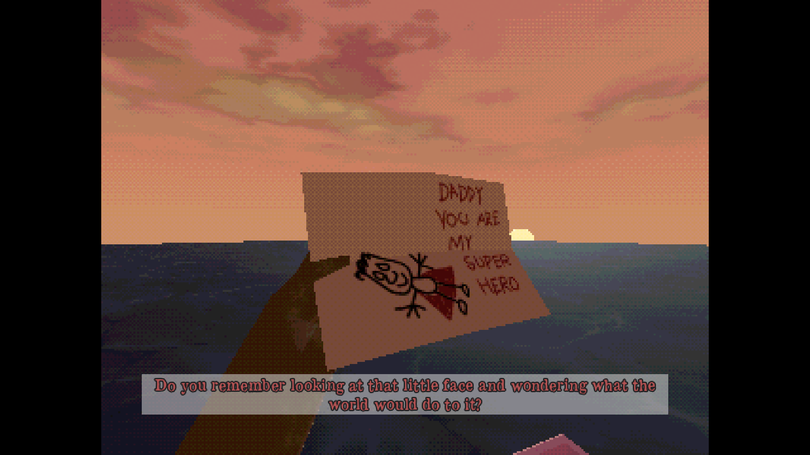
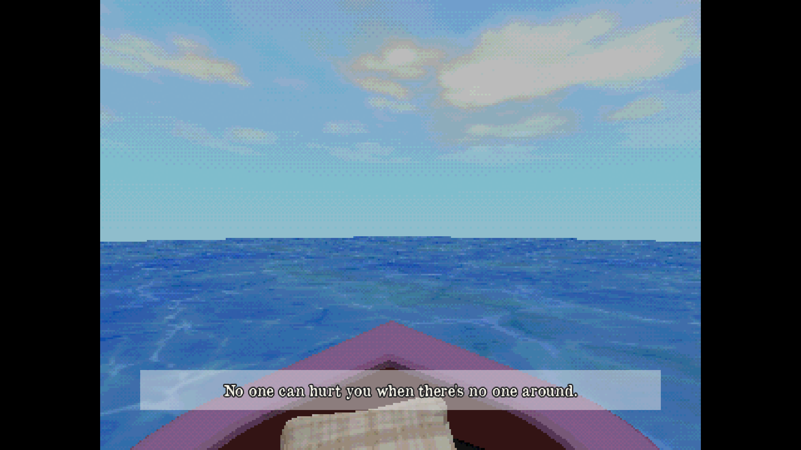

I Just Released My First Horror Game
August 29, 2026
This post is as much a disclaimer as it is a wrap-up of my latest game, Sea of Sorrow. Calling it a postmortem would sound a little too pretentious for a tiny game (about 10 to 15 mins playtime) I made in two or three weeks.
First, the disclaimer. No, I'm not insane. And no, I'm not depressed. Quite the opposite. I don't think I've ever been happier. I have a lovely family, the perfect wife and daughter, and another baby girl on the way very soon.
But the truth is (and my wife mocks me about this all the time) I fucking love bleak stuff. Dark fantasy. Gothic literature. Ghost stories. Horror movies. Punk. Anything miserable, unsettling or vaguely supernatural and I'm probably interested.

Some of the stuff that's made it into my bag recently:
Books: The Outsider, The Fog, Angel Down, Jurassic Park, The Last Days of Jack Sparks, Starve Acre
Movies: Talk to Me, Hokum, Backrooms, Iron Lung
Games: Feed the Fish, It's Snowing, On Thy Knees, Scarecrowed, The Children of Clay
I'm actually not that brave when it comes to horror games. I can't fucking stand jumpscares. But yeah. I think it's fair to call me a bleak-fuck. As a game developer, I'm still learning the tropes, though.
How Small Can a Game Be?Sea of Sorrow started with one idea: constraint. I wanted to see if I could make an interesting game in the smallest physical space possible. Even smaller than the office in Planet Flipper.
The player would be stuck in a tiny rubber boat in the middle of the ocean. That was basically it. I didn't know exactly what the game was yet, but I wanted that tiny space to somehow produce either a fun or memorable experience. Whether I achieved that, again, is for the player to decide.

So I booted up Blender, quickly modelled a low-poly rubber boat and a sea mesh, and started experimenting. Then I spent an embarrassing amount of time on the environment. Colours, lighting, shaders, textures. I probably spent an hour just looking through palettes on Lospec until I found something that felt right. The sea uses a shader from godotshaders.com, while the sky is something I shamelessly stole from my own unfinished game, Everstill Valley.
This might actually be the first game I've made where I prioritised mood and presentation over mechanics, and I think it paid off. If nothing else, it kept me motivated throughout the two or three weeks it took to make the game.
I'm becoming increasingly comfortable with the idea that visuals don't need to be realistic, or even particularly technically impressive, to make the player feel something. Sound design probably carries more of that weight than anything else. I even tried my hand at producing some of the sounds myself (my apologies for the loud cough sound effect, I just couldn't resist).
About 95% of the visuals in Sea of Sorrow were made by me using Blender, Aseprite and Krita. I'm genuinely happy with how some of the models and textures turned out. More importantly, my personal collection of code, models, textures and systems keeps getting bigger. Every game contributes something to the next one. Something I spent three hours solving six months ago can now be dropped into another project in five minutes (like the settings/keybindings addon I made, omg how I love that).
But there's another reason Sea of Sorrow ended up being the game it is, and this part is a little more personal. Where the Story Came From
I lost my dad last year. Obviously, that affected me deeply. Like a lot of people, the idea of losing my parents had been a constant fear throughout my childhood and adolescence. I even have this very clear memory of sitting at our kitchen table when I was maybe ten years old, perhaps younger, crying uncontrollably. My parents had absolutely no idea what was wrong with me. Eventually, between tears, I managed to explain:
"I just realised you two will die one day."
"What a fucking weirdo," I can only imagine them thinking lol.
My father was a good person, but also a bit troubled. He was prone to melancholy and could sometimes be violent, as well as overprotective and controlling. I'm sure that, in his own way, much of it came from trying to protect the people he loved.
But growing up around that made me extremely cautious. I'm always expecting something bad to happen. Always five steps ahead. And hey, maybe it works. Nothing particularly terrible has happened to me so far. But now I'm a grown man who catches himself glancing around every ten seconds when I'm walking somewhere with my daughter. A car could mount the kerb. She could fall. Someone could come around that corner too quickly. Completely irrational scenarios that my brain nevertheless insists on preparing for.
And that's where some of Sea of Sorrow came from. Underneath all the horror, I think it's actually a game about love. Just love twisted so far that it's no longer recognisable as such. That over-controlling need to protect someone. That almost unbearable awareness that something terrible could happen to the people you care about, combined with the equally unbearable knowledge that you cannot control everything.
Someone emotionally well-equipped learns to live with that. The protagonist of Sea of Sorrow definitely doesn't.
You can play Sea of Sorrow for free on Itch, directly in your browser:
https://pixelarmygames.itch.io/sea-of-sorrow